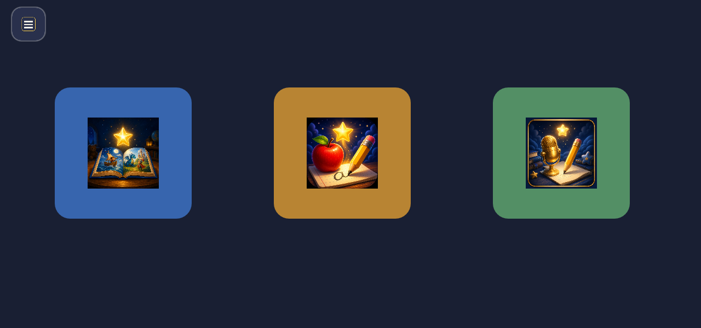
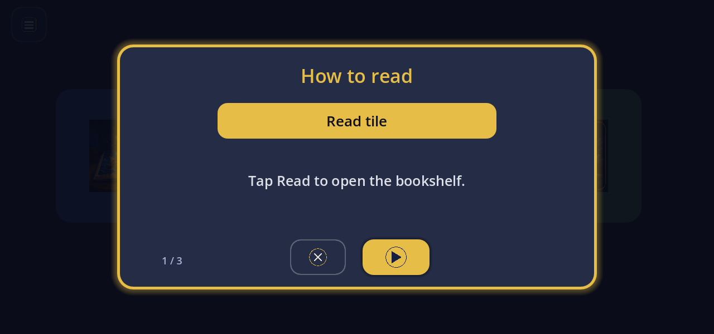
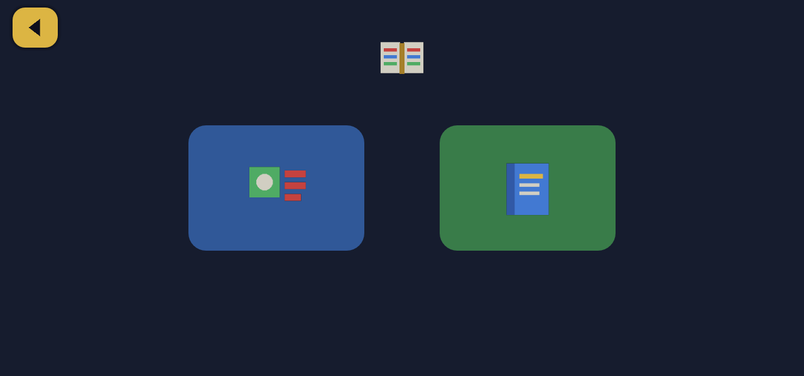
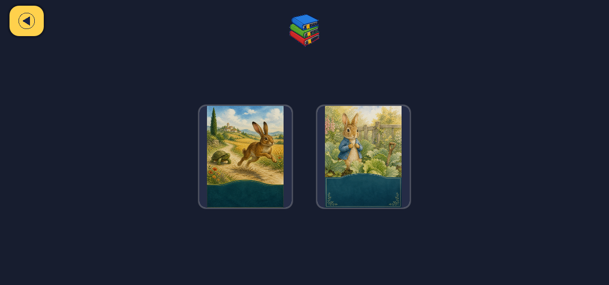
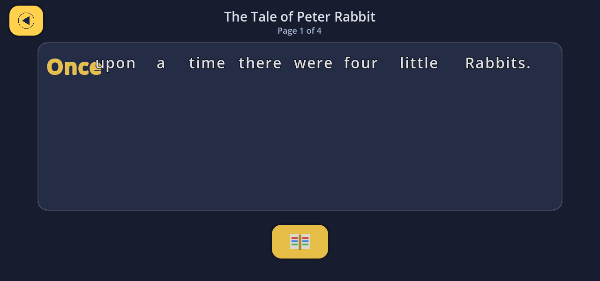
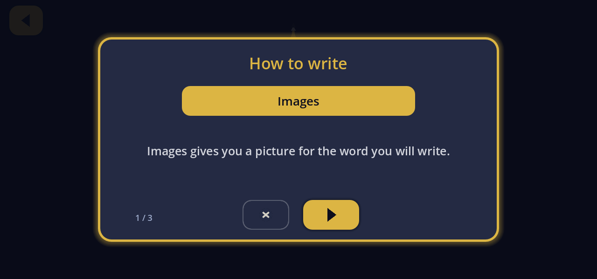
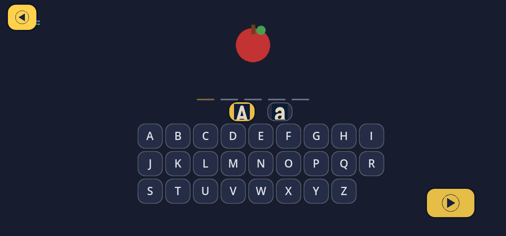

Star Learner · Game
Language Explorer
Bilingual English and Spanish reading and writing on the kiosk — books you can hear word by word, picture spelling, finger tracing, and a voice path that turns spoken ideas into letter practice.
Short overview — home tiles, Read, Write, and how letters speak back.
How it works
Home is three big tiles: Read, Write, and Voice. Icons and warm narration lead; reading the chrome is never required. One finger, landscape, same dark navy and gold console language as Math Explorer.
- Read — sentence matching. A short sprite clip shows the sentence; then match sprites to the highlighted words. Letters spell gold and bold; correct matches turn green.
- Read — books. Public-domain children’s books with baked page voice-over. One sentence at a time, spoken word bold with a gold outline. Tap a word to hear it; double-tap to spell letter-by-letter; long-press for a kid-friendly definition when the glossary knows the word.
- Write — alphabet tiles. Picture plus narration, then ABC rows that follow the word’s case. Tap the picture to hear letter-by-letter again; finish with a spaced-word celebration and a next-word tile always ready.
- Write — finger tracing. Trace large grey letter outlines; each letter speaks as you finish it, then the word celebrates.
- Voice. When the kiosk can reach the hub ASR, say an idea; the console cleans it into one short sentence and walks letter by letter with spoken next and back (pencil on paper, no alphabet board). Offline, the tile explains and Read/Write still work.
English and Spanish share one console. Every nested screen has a clear Back control. Built for a six-year-old on the Star Learner kiosk — patient VO, no scolding.
In the console








Walkthrough
Playthrough — home → books → reader → Write / Apple → home.